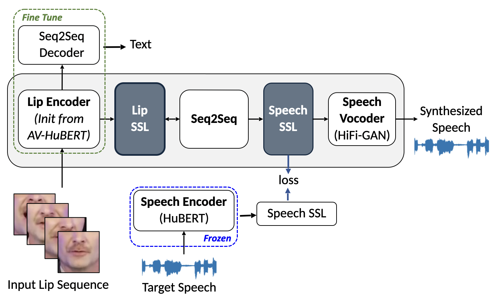

RobustL2S: Speaker-Specific Lip-to-Speech Synthesis via Self-Supervised Learning
Abstract:
We present RobustL2S, a lip-to-speech synthesis model leveraging disentangled
self-supervised audio and audio-visual representations.
We propose a modularized framework for Lip-to-Speech synthesis. First, a non-
autoregressive sequence-to-sequence model maps self-supervised
visual features to a representation of disentangled speech content.
A vocoder then converts the speech features into raw waveforms.
We present extensive results in constrained and unconstrained settings.
Extensive evaluations confirm the effectiveness of our setup,
achieving state-of-the-art performance on the unconstrained
Lip2Wav dataset and the constrained GRID and TCD-TIMIT
datasets.
Proposed Architecture

The proposed RobustL2S model utilizes a Lip and Speech encoder to extract SSL representations from lip sequences and their corresponding speech. A Seq2Seq model is employed to map the lip representations to speech representations, which are then decoded to synthesize speech